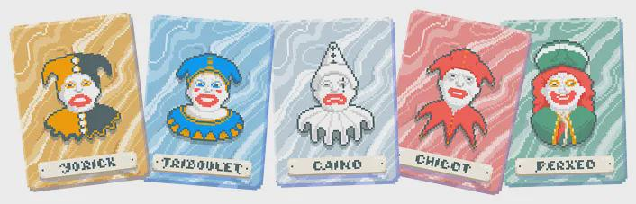

Me gusta pasar el tiempo explicando el lore de Balatro por lo anteriormente dicho, es de mis juegos favoritos actualmente.
Hoy hablaremos de: Jokers Legendarios
Son un total de cinco de los cuales hablaremos de su nombre, historia real y el efecto que dan en el juego.
| Nombre | Historia | Efecto |
|---|---|---|
| Yorick | El bufón del que solo queda el cráneo en Hamlet de William Shakespeare. En la famosa escena del cementerio, Hamlet toma el cráneo de Yorick, antiguo bufón de la corte, y reflexiona sobre la muerte y lo efímero de la vida: “¡Pobre Yorick! Yo lo conocía, Horacio.” | Obtiene x1 multiplicador cada vez que descartas 23 cartas. |
| Triboulet | Bufón de la corte de Luis XII y Francisco I de Francia, en el siglo XVI. Triboulet era famoso por sus burlas mordaces. En una ocasión insultó a una dama de la corte y fue condenado a muerte, pero Francisco I, divertido por su ingenio, le permitió elegir su forma de ejecución. Triboulet pidió “morir de vejez”, y aunque no le concedieron exactamente eso, el rey lo perdonó del suplicio. | Los Reyes y Reinas que juegas otorgan x2 multiplicador. |
| Canio | El personaje principal de la ópera Pagliacci (1892) de Ruggero Leoncavallo. Canio es un actor de comedia itinerante que interpreta al payaso en la obra dentro de la ópera. La tragedia surge cuando, en la vida real, su esposa lo engaña, y en el clímax Canio canta la famosa aria “Vesti la giubba” (“¡Ponte el traje!”) antes de asesinar a su esposa y al amante en plena función. | Gana x1 multiplicador cada vez que destruyes una carta de figura. |
| Chicot | Bufón del rey Enrique III y Enrique IV de Francia en el siglo XVI. Chicot no solo era bufón, sino también un hombre valiente y astuto. Era conocido por criticar directamente al rey y a los cortesanos sin temor a represalias. Además, fue espía y luchador, participando incluso en batallas. | Desactiva todos los efectos negativos de los Boss Blind. |
| Perkeo | Un bufón y guardián de la bodega de Heidelberg (Alemania), en el siglo XVIII. Perkeo (cuyo nombre real era Clemens Pankert) era de pequeña estatura, pero con fama de beber cantidades descomunales de vino sin emborracharse. Se convirtió en leyenda como el custodio del gigantesco tonel de Heidelberg, capaz de contener más de 200,000 litros de vino. | Crea una copia negativa de una carta consumible. |
Eso fue todo por esta Balatroclase, pero por si te llegaste a perder:
- Canio → El payaso trágico de la ópera Pagliacci.
- Triboulet → Bufón mordaz de los reyes de Francia.
- Yorick → Bufón literario inmortalizado por Shakespeare.
- Chicot → Bufón rebelde, espía y soldado de Francia.
- Perkeo → Guardián enano y bebedor legendario del tonel de Heidelberg.
Te dejo un video explicando más a detalle las mecanicas de estos jokers en el juego: